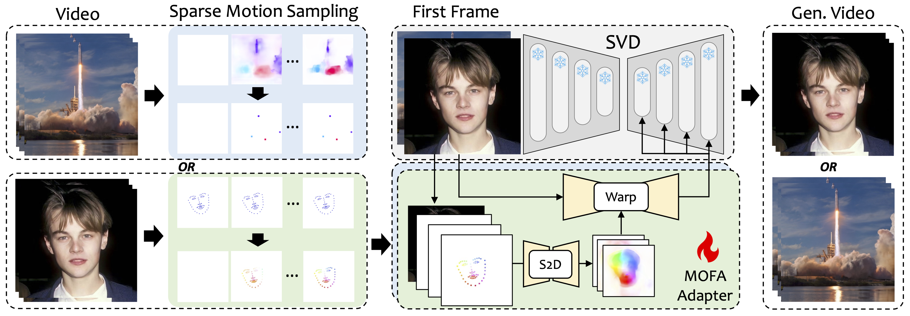

Image & Control
Output
We introduce MOFA-Video, a method designed to adapt motions from different domains to the frozen Video Diffusion Model. By employing sparse-to-dense (S2D) motion generation and flow-based motion adaptation, MOFA-Video can effectively animate a single image using various types of control signals, including trajectories, keypoint sequences, AND their combinations.
During the training stage, we generate sparse control signals through sparse motion sampling and then train different MOFA-Adapters to generate video via pre-trained SVD. During the inference stage, different MOFA-Adapters can be combined to jointly control the frozen SVD.
Image & Controls
Landmarks
Output
Image
Trajectories & Brush
Flow
Output
Image & Trajectories
Flow
Scale=0 (Pure SVD)
Scale=0.3
Scale=0.6 (Default)
Scale=1
Image
Flow
Output
Flow
Output
Image
Trajectories
w/o warping
w/o tuning
w/o S2D
Ours
Image
Flow
Landmarks
Output w/ Tuning
Output w/o Tuning
@article{niu2024mofa,
title={MOFA-Video: Controllable Image Animation via Generative Motion Field Adaptions in Frozen Image-to-Video Diffusion Model},
author={Niu, Muyao and Cun, Xiaodong and Wang, Xintao and Zhang, Yong and Shan, Ying and Zheng, Yinqiang},
journal={arXiv preprint arXiv:2405.20222},
year={2024}
}
}